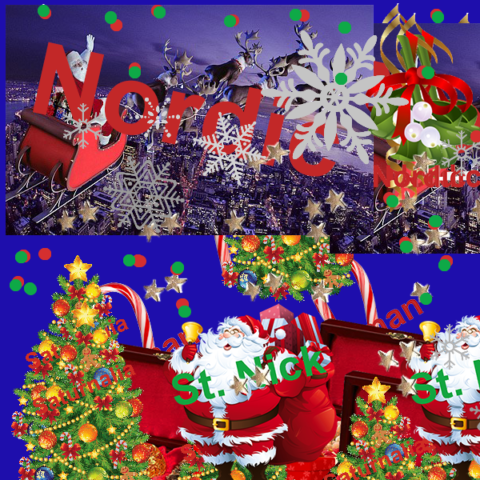

Sofarsososofie
The Drawing Program "Christmas Truth" allow users to draw with a variety of Christmas objects. The catch is that every item is branded with the actual origin of the item. The program's purpose it bring more awareness to religions and cultures borrowing other's traditions and sometimes erasing them all together.
char currentkey = '1';
PImage b,c,d;
void setup() {
size(600, 600);
background(30,14,172);
smooth();
}
void draw() {
// triggering the clear_print function if(keyPressed) { clear_print(); } // triggering the newkeychoice if(mousePressed) { // testbox(); newkeyChoice(); } } void testbox() { fill(0); rect(0,0,100,100); rect(100,100,100,100); rect(34,56,100,100); rect(34,20,100,100); } void newkeyChoice() { // the key mapping if statements that you can change to do anything you want. // just make sure each key option has the a stroke or fill and then what type of // graphic function // // key global variable contains whatever key was last pressed if (key == '1' ) { stroke(30,14,172); strokeWeight(15); line(mouseX, mouseY, pmouseX, pmouseY); } else if (key == '2') { stroke(213,47,47); strokeWeight(15); line(mouseX, mouseY, pmouseX, pmouseY); } else if (key == '3') { stroke(14,169,71); strokeWeight(15); line(mouseX, mouseY, pmouseX, pmouseY); } else if (key == '4') { b = loadImage("http://dma.sjsu.edu/art74.04/scocke/christ/christmas-clipart-presents-16.png"); image(b, mouseX, mouseY); } else if (key == '5') { b = loadImage("http://dma.sjsu.edu/art74.04/scocke/christ/candy-cane.png"); image(b, mouseX, mouseY); } else if (key == '6') { b = loadImage("http://dma.sjsu.edu/art74.04/scocke/christ/mistletoe.png"); image(b, mouseX, mouseY); } else if (key == '7') { b = loadImage("http://dma.sjsu.edu/art74.04/scocke/christ/x-mas-christmas-tree.png"); image(b, mouseX, mouseY); } else if (key == '8') { b = loadImage("http://dma.sjsu.edu/art74.04/scocke/christ/sleigh.png"); image(b, mouseX, mouseY); } else if (key == '9') { b = loadImage("http://dma.sjsu.edu/art74.04/scocke/christ/stars.png"); image(b, mouseX, 100); } else if (key == '0') { b = loadImage("http://dma.sjsu.edu/art74.04/scocke/christ/Santa-Claus-Transparent-Background.png"); image(b, mouseX, mouseY); } else if (key == 's') { //fill(random(200),random(200),random(200),90); //ellipse(mouseX, mouseY, 100, 100); //for this to work right has a image file with the corrent matching name // in the same folder as this file. b = loadImage("http://dma.sjsu.edu/art74.04/scocke/christ/Snowflakes-Transparent-PNG.png"); image(b, mouseX, mouseY); } char currentkey = key; } void clear_print() { // these 2 options let you choose between clearing the background // and saveing the current image as a file. if (key == 'x' || key == 'X') { background(30,14,172); } else if (key == 'p' || key == 'P') { saveFrame("images/00sd_m-####.png"); //this will save the name as the intials and a millis counting number. // it will always be larger in value then the last one. } }